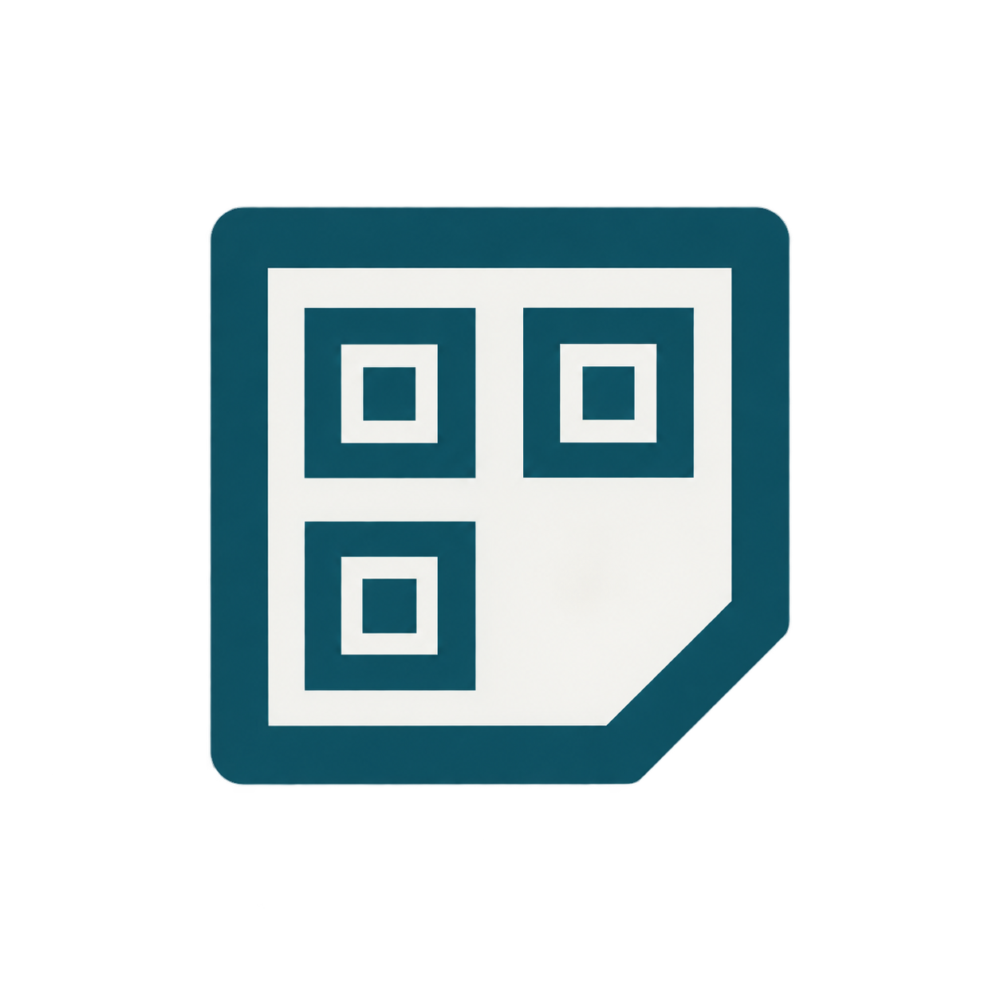
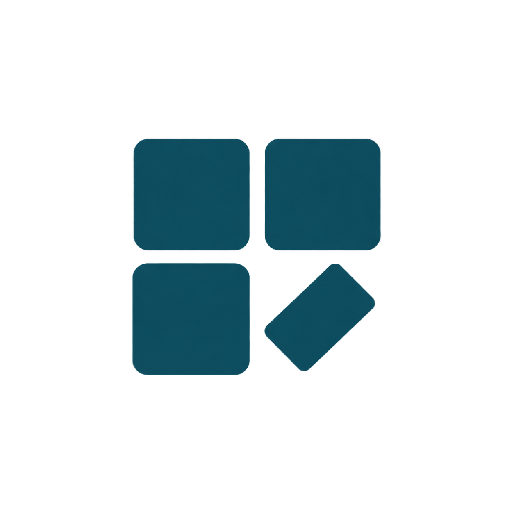

Generador de QR · Propuestas y aplicación del concepto elegido. Paleta Sello y Papel; geometría simple para reconocer la herramienta de Maxi.


Tres módulos remiten al QR; la pieza diagonal sugiere una etiqueta que se aplica. Sin letras ni colores prestados de los canales.
Simulación ilustrativa, no captura de iOS. Usa el archivo real de 180 × 180 px sobre fondo opaco. El sistema aplica las esquinas redondeadas; el PNG se entrega cuadrado.
Prompts, tiempos y registro de generación